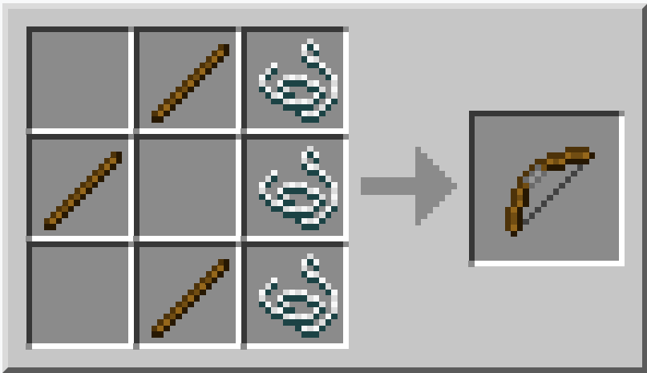

Arco

| Nome | Arco |
|---|---|
| Id | 261 105 |
| Tipo | Arma |
| Raritá | Comune |
| Durabilita | 385 |
| Rinnovabile | Si |
| Impilabile | No |
L'arco è un arma a distanza che spara frecce. Permette al giocatore di uccidere mob e altri giocatori da grandi distanze rispetto ad armi a distanza ravvicinata come le spade. Gli archi possono essere caricati premendo il tasto "usa" (il tasto destro sul PC), e quando sono caricati completamente le frecce fanno un danno di 4,5♥, o raramente 5♥.
L'arco può essere incantato, e ha una base di incantabilità di 1. Può essere fabbricato, ed è un rilascio raro degli scheletri; gli archi rilasciati dagli scheletri hanno solitamente una durabilità rimasta molto bassa. Se il giocatore vuole creare un arco dagli archi raccolti dagli scheletri, può ripararli usando un banco da lavoro o un incudine fino a che non ottiene un arco con alta durabilità.
Ottenimento
Gli archi possono essere fabbricati e sono un rilascio potenziale degli scheletri. Dagli snapshot della 1.8, la nuova carriera del villico arcaio può far vendere archi per 2-3 smeraldi a pezzo. Infine, gli archi possono essere presi pescando, come un "tesoro", perché l'arco che viene pescato può essere incantato ma è leggermente danneggiato.
Fabbricazione
3 bastoni e 3 stringhe come in figura
Il layout non é trascurabile ma é simmetrico
Uso
Per usare un arco, devi avere l'oggetto attivo e devi avere come minimo una freccia nell'inventario (in modalità creativa la freccia nell'inventario non è richiesta per sparare). Clicca semplicemente il tasto destro per usare l'arco, che sparerà frecce. Tenere premuto il tasto destro farà "caricare" l'arco (tenderà indietro la cordicella) e la freccia volerà più lontano quando verrà rilasciato.
Caricare un arco al massimo causerà l'agitazione della visuale come un indicatore, e rilasciare una freccia con un effetto scintillante significherà un colpo critico che causerà molto danno. Al caricamento completo, una freccia viaggia per circa 65 blocchi in altezza, e vola con una velocità di circa 53 m/s, e toglie 4,5♥ per colpo (quanto una spada di diamante circa), con una rara possibilità di togliere 5♥. Gli incantesimi dell'arco non influenzano la velocità o la distanza, ma incrementano un po' il danno.
Mentre l'arco viene caricato o rimane completamente caricato, il giocatore è forzato a muoversi alla velocità dell'accovacciamento, a meno che non sia cavalcando un equino in quel momento, il che non causerà una riduzione di velocità.
Siccome le frecce sono influenzate dalla gravità, tenderanno a fare un percorso inarcato a seconda delle distanze. Devi prima mirare il bersaglio quando spari dalla distanza, o andare su una piattaforma elevata, per colpire con certezza.
Le frecce che colpiscono blocchi solidi si incastrano e possono essere collezionate di nuovo, a meno che non siano delle frecce incantate con l'infinità. Le frecce sparate dagli scheletri non possono essere raccolte.
Due frecce completamente caricate sono spesso richieste per uccidere mob passivi, mentre 3 sono spesso richieste per uccidere il più degli ostili.
Le frecce che sparano gli scheletri si incastrano nei blocchi che colpiscono e non possono essere raccolte. Continueranno a viaggiare se il giocatore estrae questi blocchi, con un potenziale danno continuo.